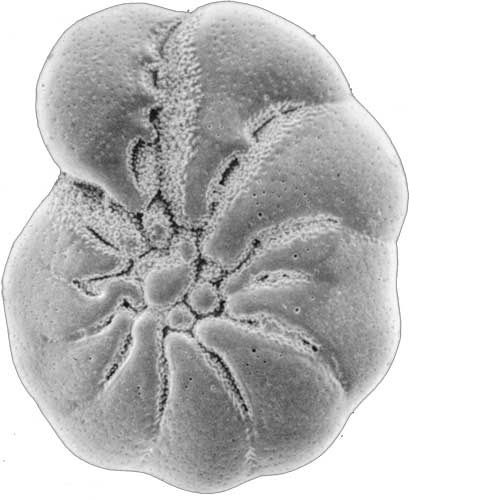

<a href="https://github.com/AlbertoFormaggio1/Grayscale-to-RGB" class="fill-div nostyle">
    <div class="row mb-5 project-box pb-3">

        <div class="col-12">
            <h6 class="txt-primary mt-4">Grayscale to RGB for CNN training</h6>
        </div>
        <div class="col-12 col-md-4">
            
        </div>
        <div class="col-12 col-md-8">
            <div class="row mb-3">
                <div class="col-12">
                    Conversion of 16 grayscale foraminifera images to a single image in RGB format.
                    The goal is to improve the classification accuracy of a CNN, the conversion is done with unsupervised learning techniques.
                    Achieved 0.805 accuracy.
                    Developed with MATLAB.
                </div>
            </div>
            <div class="row">
                <div class="col-12">
                    <ul class="mt-2 d-flex flex-wrap no-style-list">
                        <li class="mt-2 mr-2">
                            <div class="txt-primary d-flex align-items-center skill-object px-3 py-1">Computer Vision</div>
                        </li>
                        <li class="mt-2 mr-2">
                            <div class="txt-primary d-flex align-items-center skill-object px-3 py-1">Unsupervised Learning</div>
                        </li>
                    </ul>
                </div>
            </div>
        </div>
    </div>
</a>